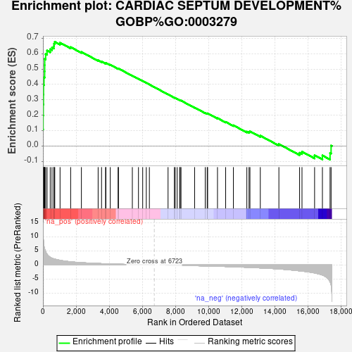
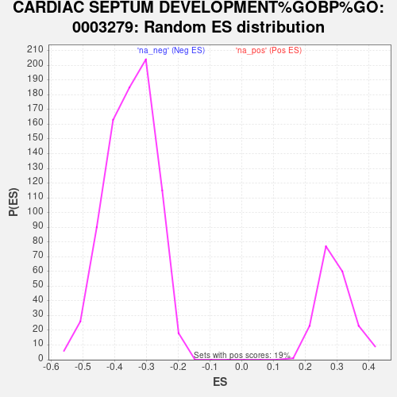

| Dataset | gene_ranks |
| Phenotype | NoPhenotypeAvailable |
| Upregulated in class | na_pos |
| GeneSet | CARDIAC SEPTUM DEVELOPMENT%GOBP%GO:0003279 |
| Enrichment Score (ES) | 0.6770482 |
| Normalized Enrichment Score (NES) | 2.3095999 |
| Nominal p-value | 0.0 |
| FDR q-value | 2.4971657E-4 |
| FWER p-Value | 0.001 |

| SYMBOL | RANK IN GENE LIST | RANK METRIC SCORE | RUNNING ES | CORE ENRICHMENT | |
|---|---|---|---|---|---|
| 1 | SMAD6 | 0 | 14.930 | 0.1078 | Yes |
| 2 | NOG | 9 | 12.570 | 0.1981 | Yes |
| 3 | FGFR2 | 19 | 10.081 | 0.2704 | Yes |
| 4 | HAND1 | 29 | 8.979 | 0.3347 | Yes |
| 5 | SMAD7 | 34 | 8.656 | 0.3970 | Yes |
| 6 | HEY1 | 62 | 6.987 | 0.4459 | Yes |
| 7 | BMP7 | 102 | 5.718 | 0.4850 | Yes |
| 8 | NRP1 | 105 | 5.637 | 0.5256 | Yes |
| 9 | ENG | 107 | 5.632 | 0.5662 | Yes |
| 10 | BMPR1A | 163 | 4.790 | 0.5976 | Yes |
| 11 | STRA6 | 249 | 3.805 | 0.6202 | Yes |
| 12 | LRP2 | 440 | 2.709 | 0.6289 | Yes |
| 13 | HES1 | 549 | 2.405 | 0.6400 | Yes |
| 14 | BMPR2 | 663 | 2.168 | 0.6492 | Yes |
| 15 | HEY2 | 669 | 2.160 | 0.6645 | Yes |
| 16 | TGFBR1 | 715 | 2.095 | 0.6770 | Yes |
| 17 | SEMA3C | 1034 | 1.674 | 0.6709 | No |
| 18 | SOX4 | 1674 | 1.141 | 0.6424 | No |
| 19 | GATA3 | 2324 | 0.829 | 0.6111 | No |
| 20 | TBX5 | 3335 | 0.535 | 0.5569 | No |
| 21 | GATA4 | 3541 | 0.484 | 0.5487 | No |
| 22 | MATR3 | 3784 | 0.450 | 0.5380 | No |
| 23 | SLIT3 | 3805 | 0.447 | 0.5401 | No |
| 24 | ZFPM2 | 4068 | 0.385 | 0.5278 | No |
| 25 | TBX2 | 4541 | 0.293 | 0.5028 | No |
| 26 | NPHP3 | 4564 | 0.289 | 0.5036 | No |
| 27 | ACVR1 | 5402 | 0.161 | 0.4567 | No |
| 28 | NOTCH2 | 5772 | 0.111 | 0.4363 | No |
| 29 | PROX1 | 6027 | 0.078 | 0.4223 | No |
| 30 | TBX20 | 6245 | 0.052 | 0.4102 | No |
| 31 | SMAD4 | 6431 | 0.030 | 0.3998 | No |
| 32 | HEYL | 7560 | -0.039 | 0.3353 | No |
| 33 | CITED2 | 7941 | -0.083 | 0.3140 | No |
| 34 | HECTD1 | 7992 | -0.088 | 0.3118 | No |
| 35 | SOX11 | 8112 | -0.103 | 0.3057 | No |
| 36 | GATA6 | 8262 | -0.123 | 0.2980 | No |
| 37 | TGFB2 | 8292 | -0.127 | 0.2973 | No |
| 38 | SLIT2 | 8343 | -0.133 | 0.2954 | No |
| 39 | ISL1 | 9165 | -0.237 | 0.2499 | No |
| 40 | MDM4 | 9807 | -0.329 | 0.2155 | No |
| 41 | JAG1 | 9924 | -0.348 | 0.2113 | No |
| 42 | PDE2A | 9952 | -0.353 | 0.2123 | No |
| 43 | TBX1 | 10547 | -0.456 | 0.1815 | No |
| 44 | ANK2 | 11040 | -0.538 | 0.1571 | No |
| 45 | BMP4 | 11508 | -0.624 | 0.1348 | No |
| 46 | CRELD1 | 12321 | -0.818 | 0.0940 | No |
| 47 | NOTCH1 | 12454 | -0.850 | 0.0926 | No |
| 48 | ROBO1 | 12508 | -0.865 | 0.0958 | No |
| 49 | MAML1 | 13134 | -1.041 | 0.0674 | No |
| 50 | ZFPM1 | 14257 | -1.402 | 0.0131 | No |
| 51 | NRP2 | 15508 | -2.078 | -0.0437 | No |
| 52 | FGF8 | 15653 | -2.168 | -0.0364 | No |
| 53 | SALL1 | 16414 | -2.827 | -0.0596 | No |
| 54 | TGFBR3 | 16887 | -3.558 | -0.0610 | No |
| 55 | PARVA | 17349 | -5.921 | -0.0448 | No |
| 56 | ROBO2 | 17411 | -7.081 | 0.0029 | No |
